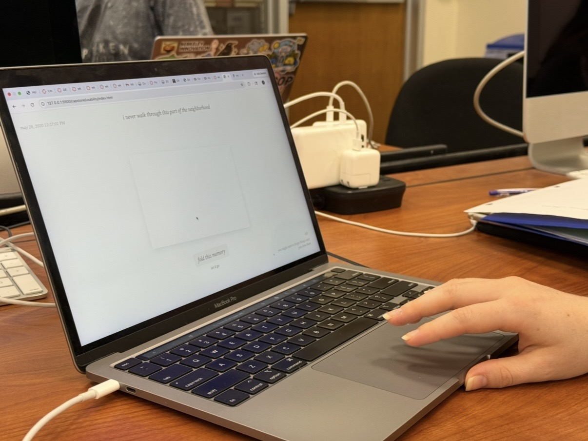
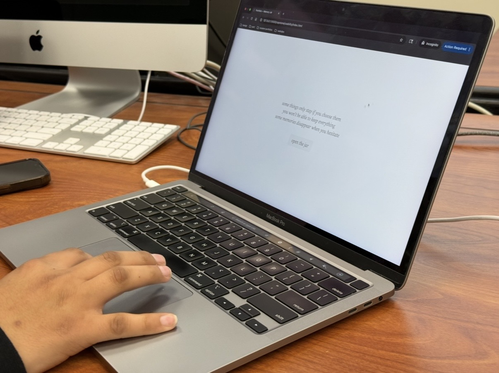
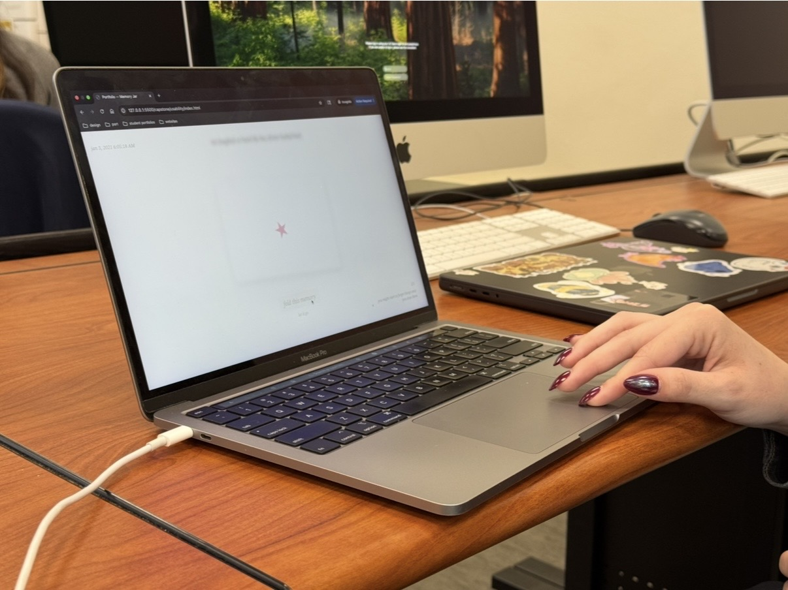

User 1

The first user suggested the timing of the text to be extended one second longer. They said that the three seconds felt a little rushed, and that they would have liked a little more time to reflect on the memory before it disappeared. But they also found value in how they were forced to make a quick decision, which made the experience feel more emotional.
User 2

The second user also found that the timing of the text worked in favor of the emotional stakes and the message. They suggested adding a visual element of the stars to the side of the screen as the user saves memories, so that the user can see how many stars they have left and how many they have saved.
User 3

The third user wondered if there was a difference between choosing to let a memory go and waiting for the time to run out. This user also wondered if there could be a stronger connection between memories and the star motif throughout the experience.